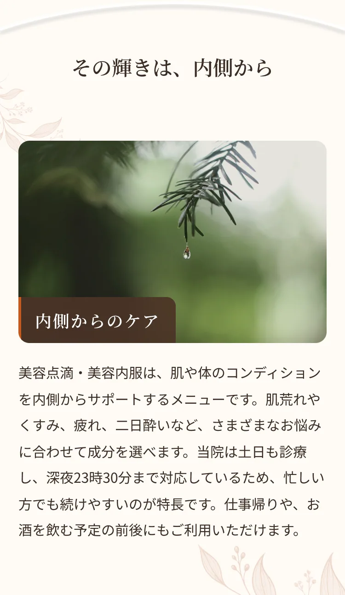
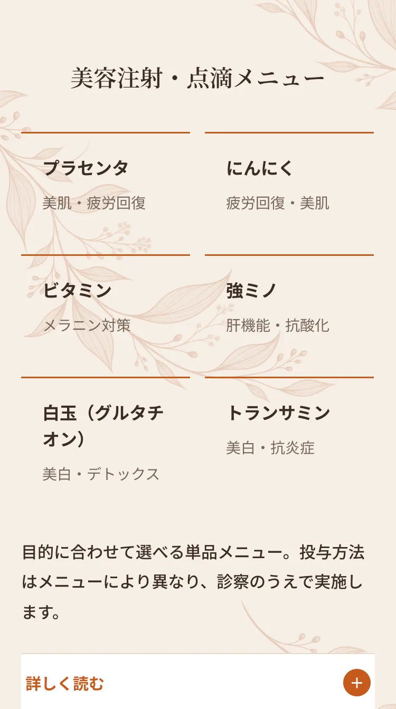
単品の注射・点滴メニューも豊富にご用意しています。プラセンタ（ラエンネック）は美肌・疲労回復などに、にんにく（アリナミンF）は疲労回復・美肌に、ビタミン（アスコルビン酸）はメラニン対策・抵抗力アップに、強ミノ（強力ネオミノファーゲンシー）は肝機能改善・抗酸化に、白玉（グルタチオン）は全身の美白・デトックス・疲労回復に、トランサミンは美白・抗炎症に効果が期待できます。点滴・静脈注射・筋肉注射など、メニューにより投与方法が異なります。各メニューには副作用があり、診察のうえで実施します。
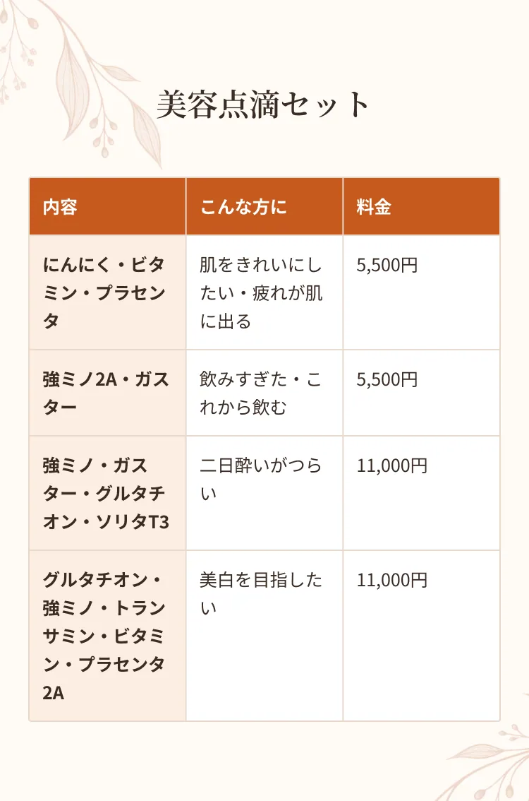
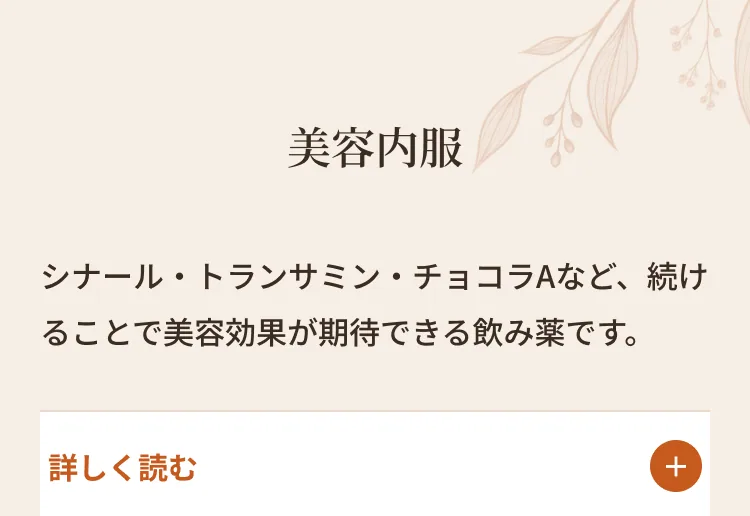
美容内服は、続けることで美容効果が期待できる飲み薬です。代表的なものに、メラニンの生成・代謝に働きかけ美白や肌のハリをサポートするシナール、シミ・肝斑・色素沈着の改善が期待できるトランサミン（トラネキサム酸）、皮膚や粘膜を健やかに保つチョコラA、ビタミンEのユベラ、メラニンの生成を抑えるピドキサール・ハイチオール、全身の美白に働くグルタチオン、肌の炎症を防ぐビオチンなどがあります。お悩みや目的に合わせてお選びいただけます。各薬剤には規格・用法と副作用があります。
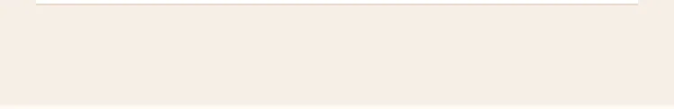
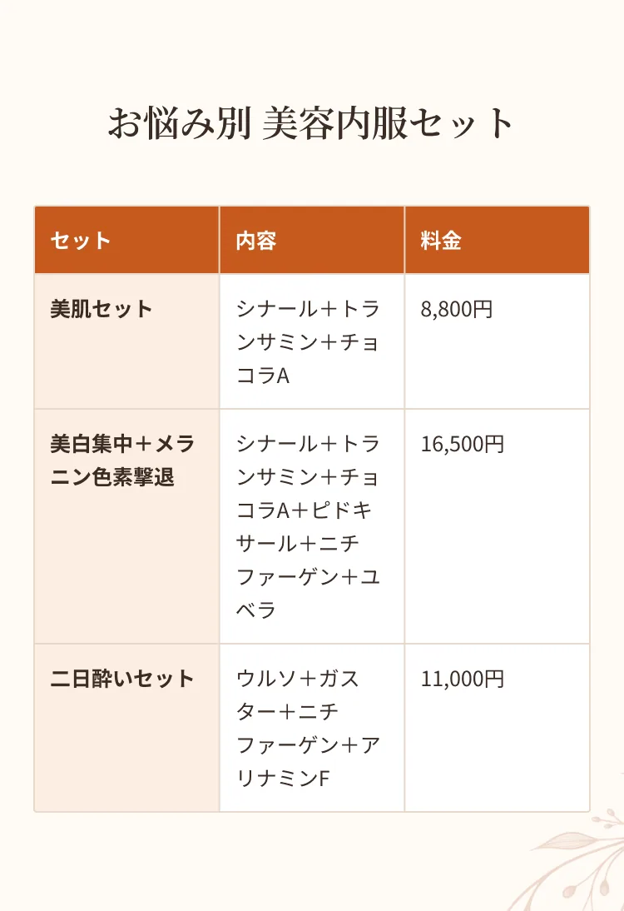
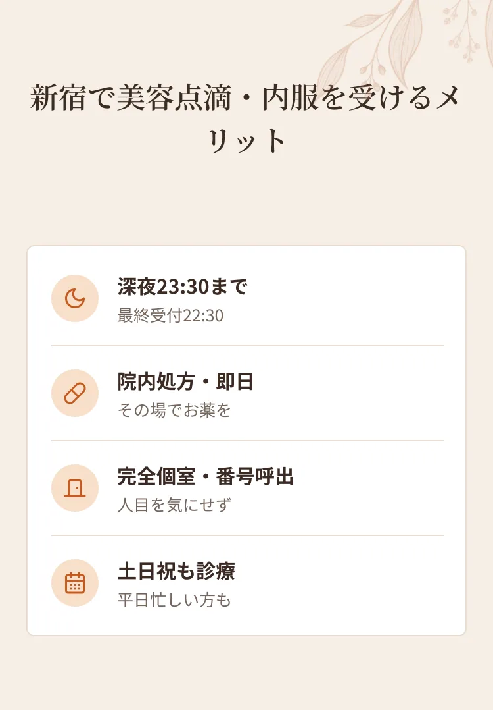
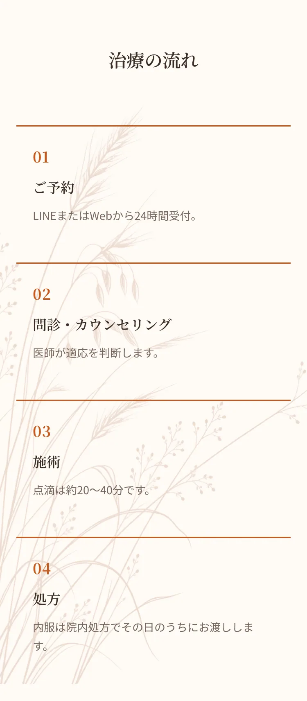
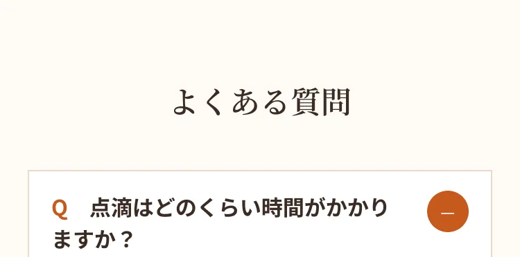
A.約20〜40分です。
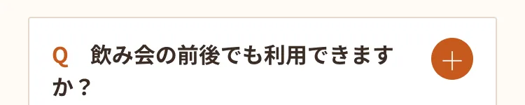
A.二日酔い対策のメニューもあり、深夜まで対応しています。
A.美肌セットなど、目的別のセットからお選びいただけます。
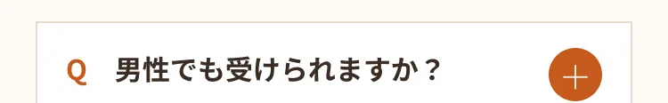
A.プラセンタなど男女問わず受けられるメニューがあります。

A.深夜23:30まで（最終受付22:30）対応しています。